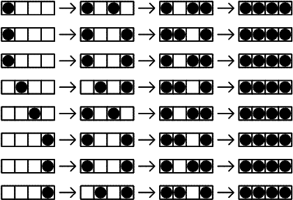

There are N seats in a row. N people come after each other to fill the seats according to the following rules:
- If there is any seat whose adjacent seat(s) are not occupied take such a seat.
- If there is no such seat and there is any seat for which only one adjacent seat is occupied take such a seat.
- Otherwise take one of the remaining available seats.
Let T(
N) be the number of possibilities that
N seats are occupied by
N people with the given rules.
The following figure shows T(4)=8.

We can verify that T(10) = 61632 and T(1 000) mod 100 000 007 = 47255094.
Find T(1 000 000) mod 100 000 007.